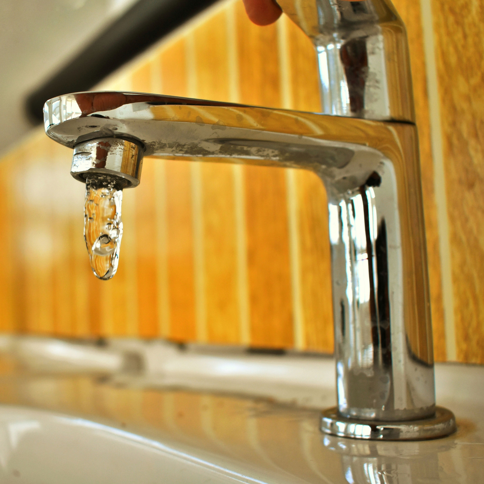
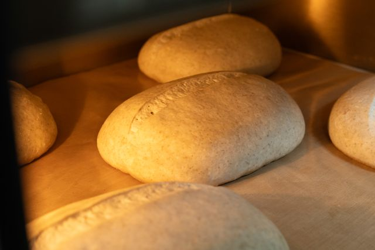
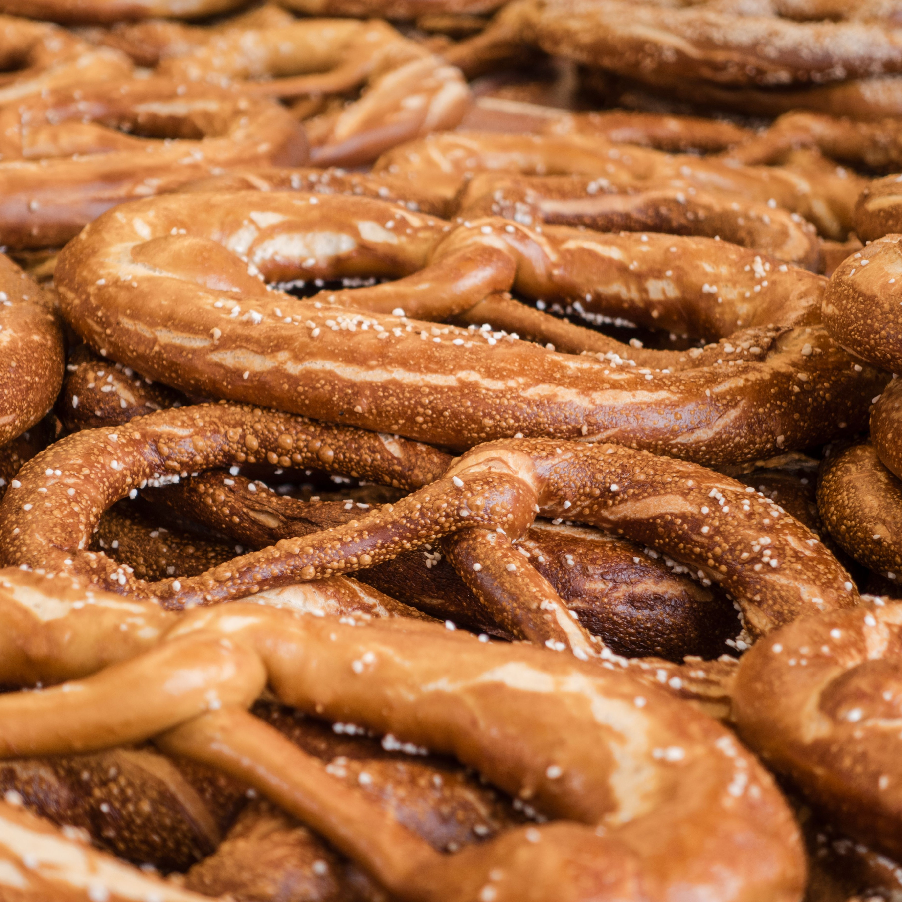
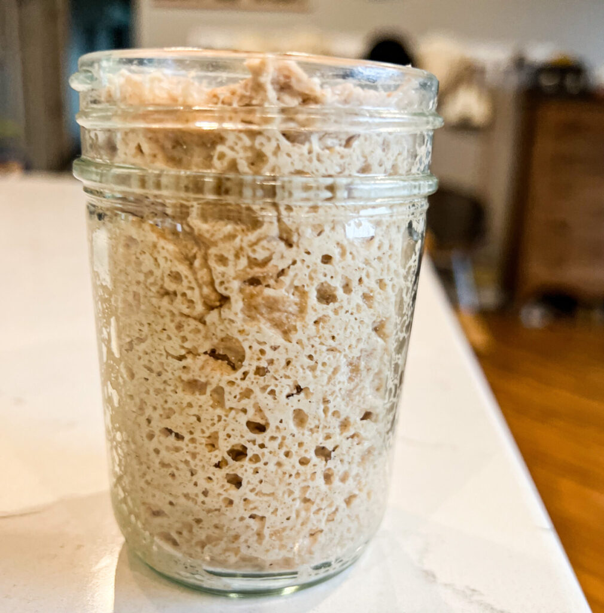
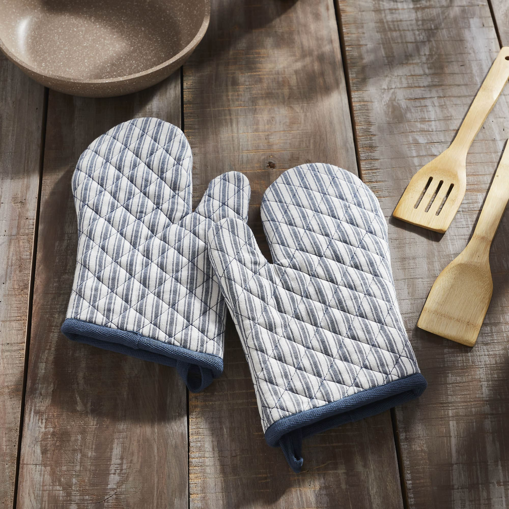
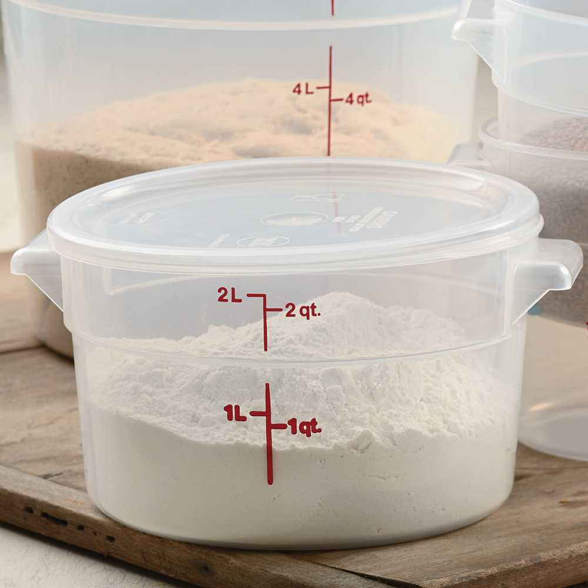
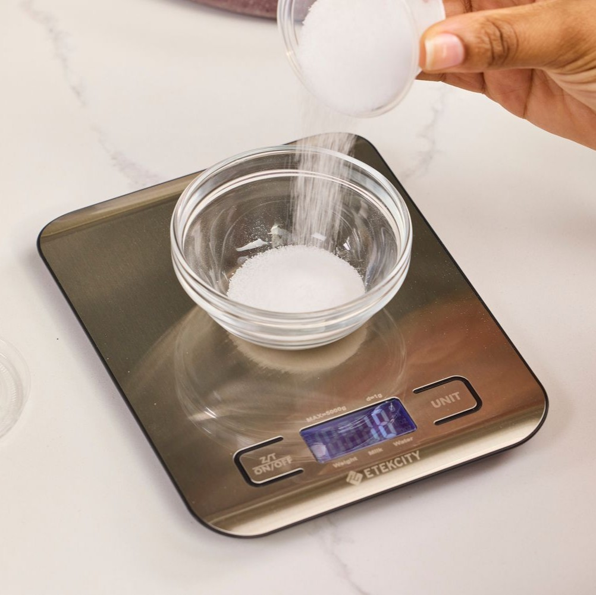
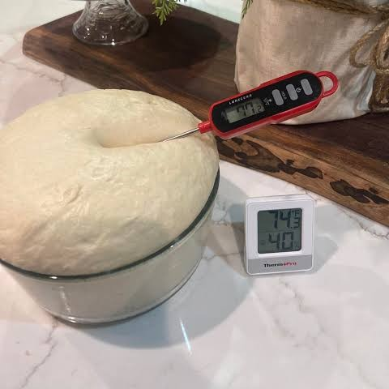
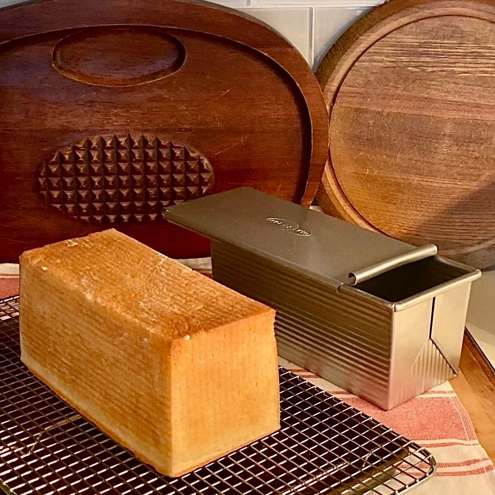
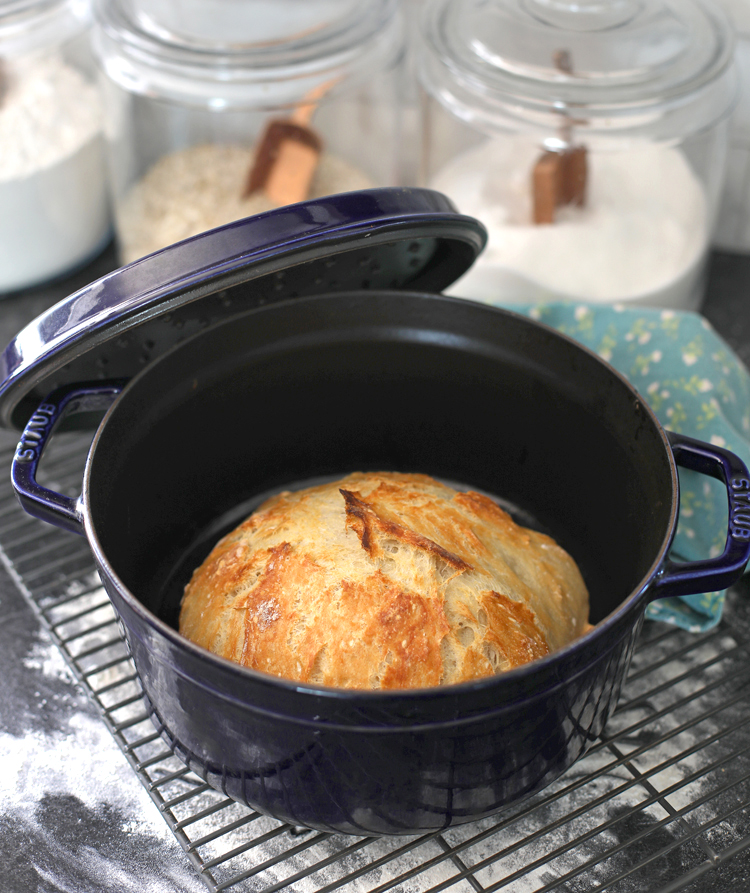

Water
Tap water is normally fine, though filtered water is likely better. As a general rule of thumb: if it's good enough to drink, it's good enough for baking.

Bread Central
Looking to advance your bread knowledge? You've come to the right place.
Contact UsWhat kind of flour should you buy to make good bread at home? There are more choices than ever for finding the right vendor, either locally or online. For this section, we'll review some fundamental ingredients for breadmaking: water, salt, and yeast. They all matter.

Tap water is normally fine, though filtered water is likely better. As a general rule of thumb: if it's good enough to drink, it's good enough for baking.


When baking, I prefer a fine sea salt. Avoid iodized salt, as iodine inhibits fermentation and you can taste it.
Salt slows the fermentation of bread dough, and that's a good thing. Without it, bread dough will rise very fast and taste a bit more bland.
You're likey to find three kinds of yeast at the store: active dry, rapid rise, and instant. What differentiates them is their coating, the way the yeast is manufactured, and performance.
Professional bakers use the term commercial yeast to refer to what they consider as store-bought yeast. Commercial yeast causes bread dough to rise faster and provide more lift, producing bread with a light texture and more volume than levain breads.

After the wheat grain is harvested, it is milled, the process that takes the whole grain and blends it down into the type of flour desired. This usually involves removing some or all of the germ and endosperm to get the right texture and protein content for the type of flour to be sold.
These flours include all-purpose, self-rising, bread, cake, pastry, whole wheat, barley, and many more.
Any job is easier when you got the right tools. Some are essential, while others make parts of the project less of a hassle. It feels good when you have everything in its place, and the task at hand is faster and more efficient when your not looking for this and that throughout the whole process. A few items I recommend for breadmaking goes as follow:






These items above are meant to work as a reference, and if you have any suggestions, reach out below!